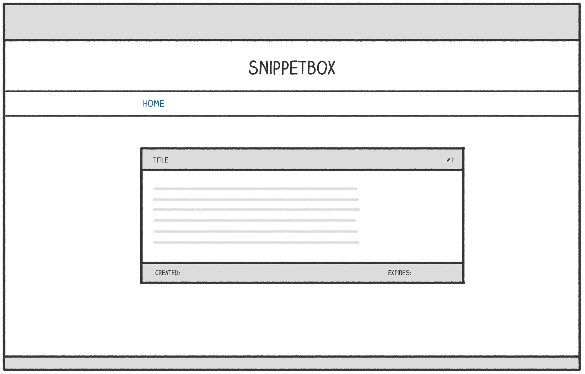

نمایش دادههای پویا (Displaying Dynamic Data)
در حال حاضر، تابع snippetView ما یک شیء مدل قطعه کد (Snippet Model) را از پایگاه داده دریافت میکند و سپس محتویات آن را به صورت یک پاسخ HTTP متنی ساده (Plain Text HTTP Response) نمایش میدهد.
در این فصل، این را بهبود میدهیم تا دادهها در یک صفحه وب HTML (HTML Web Page) مناسب نمایش داده شوند که شبیه به این است:

بیایید با افزودن کدی به تابع snippetView شروع کنیم تا یک فایل قالب جدید view.tmpl را رندر کند (که در یک دقیقه ایجاد خواهیم کرد). امیدوارم این برای شما از قبل آشنا باشد.
package main import ( "errors" "fmt" "html/template" // Uncomment import "net/http" "strconv" "snippetbox.letsgofa.net/internal/models" ) ... func (app *application) snippetView(w http.ResponseWriter, r *http.Request) { id, err := strconv.Atoi(r.PathValue("id")) if err != nil || id < 1 { http.NotFound(w, r) return } snippet, err := app.snippets.Get(id) if err != nil { if errors.Is(err, models.ErrNoRecord) { http.NotFound(w, r) } else { app.serverError(w, r, err) } return } // Initialize a slice containing the paths to the view.tmpl file, // plus the base layout and navigation partial that we made earlier. files := []string{ "./ui/html/base.tmpl", "./ui/html/partials/nav.tmpl", "./ui/html/pages/view.tmpl", } // Parse the template files... ts, err := template.ParseFiles(files...) if err != nil { app.serverError(w, r, err) return } // And then execute them. Notice how we are passing in the snippet // data (a models.Snippet struct) as the final parameter? err = ts.ExecuteTemplate(w, "base", snippet) if err != nil { app.serverError(w, r, err) } } ...
در مرحله بعد، باید فایل view.tmpl را ایجاد کنیم که حاوی نشانهگذاری HTML برای صفحه است. اما قبل از آن، کمی نظریه را باید توضیح دهم…
هر دادهای که به عنوان پارامتر نهایی به ts.ExecuteTemplate() ارسال میکنید، در قالبهای HTML شما با کاراکتر . (که به آن نقطه گفته میشود) نمایش داده میشود.
در این مورد خاص، نوع زیرین نقطه یک ساختار models.Snippet خواهد بود. هنگامی که نوع زیرین نقطه یک ساختار است، میتوانید مقدار هر فیلد صادر شده را در قالبهای خود با افزودن نقطه به نام فیلد نمایش دهید. بنابراین، چون ساختار models.Snippet ما یک فیلد Title دارد، میتوانیم عنوان قطعه را با نوشتن {{.Title}} در قالبهای خود نمایش دهیم.
من نشان خواهم داد. یک فایل جدید در ui/html/pages/view.tmpl ایجاد کنید و نشانهگذاری زیر را اضافه کنید:
$ touch ui/html/pages/view.tmpl
{{define "title"}}Snippet #{{.ID}}{{end}}
{{define "main"}}
<div class='snippet'>
<div class='metadata'>
<strong>{{.Title}}</strong>
<span>#{{.ID}}</span>
</div>
<pre><code>{{.Content}}</code></pre>
<div class='metadata'>
<time>Created: {{.Created}}</time>
<time>Expires: {{.Expires}}</time>
</div>
</div>
{{end}}
اگر برنامه را مجدداً راهاندازی کنید و به http://localhost:4000/snippet/view/1 در مرورگر خود بروید، باید ببینید که قطعه مربوطه از پایگاه داده دریافت شده، به قالب ارسال شده و محتوا به درستی رندر شده است.

رندر کردن چندین قطعه داده
یک نکته مهم برای توضیح این است که بسته html/template در Go به شما اجازه میدهد که تنها یک قطعه داده پویا را هنگام رندر کردن یک قالب ارسال کنید. اما در یک برنامه واقعی، اغلب چندین قطعه داده پویا وجود دارد که میخواهید در همان صفحه نمایش دهید.
یک روش سبک و نوعامن برای دستیابی به این هدف این است که دادههای پویا خود را در یک ساختار قرار دهید که به عنوان یک ساختار نگهدارنده برای دادههای شما عمل کند.
بیایید یک فایل جدید cmd/web/templates.go ایجاد کنیم که حاوی یک ساختار templateData برای انجام دقیقاً همین کار باشد.
$ touch cmd/web/templates.go
package main import "snippetbox.letsgofa.net/internal/models" // Define a templateData type to act as the holding structure for // any dynamic data that we want to pass to our HTML templates. // At the moment it only contains one field, but we'll add more // to it as the build progresses. type templateData struct { Snippet models.Snippet }
و سپس بیایید تابع snippetView را بهروزرسانی کنیم تا از این ساختار جدید هنگام اجرای قالبهای ما استفاده کند:
package main // ... existing code ... func (app *application) snippetView(w http.ResponseWriter, r *http.Request) { id, err := strconv.Atoi(r.PathValue("id")) if err != nil || id < 1 { http.NotFound(w, r) return } snippet, err := app.snippets.Get(id) if err != nil { if errors.Is(err, models.ErrNoRecord) { http.NotFound(w, r) } else { app.serverError(w, r, err) } return } files := []string{ "./ui/html/base.tmpl", "./ui/html/partials/nav.tmpl", "./ui/html/pages/view.tmpl", } ts, err := template.ParseFiles(files...) if err != nil { app.serverError(w, r, err) return } // Create an instance of a templateData struct holding the snippet data. data := templateData{ Snippet: snippet, } // Pass in the templateData struct when executing the template. err = ts.ExecuteTemplate(w, "base", data) if err != nil { app.serverError(w, r, err) } } // ... existing code ...
بنابراین اکنون، دادههای قطعه ما در یک ساختار models.Snippet درون یک ساختار templateData قرار دارد. برای نمایش دادهها، باید نام فیلدهای مناسب را به این صورت زنجیره کنیم:
{{define "title"}}Snippet #{{.Snippet.ID}}{{end}}
{{define "main"}}
<div class='snippet'>
<div class='metadata'>
<strong>{{.Snippet.Title}}</strong>
<span>#{{.Snippet.ID}}</span>
</div>
<pre><code>{{.Snippet.Content}}</code></pre>
<div class='metadata'>
<time>Created: {{.Snippet.Created}}</time>
<time>Expires: {{.Snippet.Expires}}</time>
</div>
</div>
{{end}}
احساس راحتی کنید که برنامه را مجدداً راهاندازی کنید و دوباره به http://localhost:4000/snippet/view/1 بروید. باید همان صفحهای که قبلاً در مرورگر شما رندر شده بود را ببینید.
اطلاعات اضافی
فرار از محتوای پویا
بسته html/template به طور خودکار هر دادهای که بین تگهای {{ }} نمایش داده میشود را فرار میدهد. این رفتار به شدت در جلوگیری از حملات XSS کمک میکند و دلیل این است که باید از بسته html/template به جای بسته عمومیتر text/template که Go نیز ارائه میدهد، استفاده کنید.
به عنوان مثال از فرار، اگر داده پویا که میخواهید نمایش دهید به این صورت باشد:
<span>{{"<script>alert('xss attack')</script>"}}</span>
به صورت بیضرر به این صورت رندر میشود:
<span><script>alert('xss attack')</script></span>
بسته html/template همچنین به اندازه کافی هوشمند است که فرار را به صورت وابسته به زمینه انجام دهد. از توالیهای فرار مناسب بسته به اینکه داده در کدام قسمت از صفحه که شامل HTML، CSS، جاوااسکریپت یا URI است، استفاده میکند.
قالبهای تو در تو
بسیار مهم است که توجه داشته باشید وقتی که یک قالب را از قالب دیگری فراخوانی میکنید، نقطه باید به طور صریح به قالب فراخوانی شده ارسال یا پایپلاین شود. این کار را با افزودن آن در انتهای هر {{template}} یا {{block}} انجام میدهید، به این صورت:
{{template "main" .}}
{{block "sidebar" .}}{{end}}
به عنوان یک قاعده کلی، توصیه من این است که همیشه عادت کنید که نقطه را هر زمان که یک قالب را با استفاده از اقدامات {{template}} یا {{block}} فراخوانی میکنید، پایپلاین کنید، مگر اینکه دلیل خوبی برای عدم انجام این کار داشته باشید.
فراخوانی متدها
اگر نوعی که بین تگهای {{ }} نمایش میدهید دارای متدهایی است که در برابر آن تعریف شدهاند، میتوانید این متدها را فراخوانی کنید (به شرطی که صادر شده باشند و تنها یک مقدار — یا یک مقدار و یک خطا — برگردانند).
به عنوان مثال، فیلد ساختار .Snippet.Created ما دارای نوع زیرین time.Time است، به این معنی که میتوانید نام روز هفته را با فراخوانی متد Weekday() به این صورت رندر کنید:
<span>{{.Snippet.Created.Weekday}}</span>
همچنین میتوانید پارامترها را به متدها ارسال کنید. به عنوان مثال، میتوانید از متد AddDate() برای افزودن شش ماه به یک زمان به این صورت استفاده کنید:
<span>{{.Snippet.Created.AddDate 0 6 0}}</span>
توجه داشته باشید که این نحو متفاوتی با فراخوانی توابع در Go دارد — پارامترها در پرانتز قرار نمیگیرند و با یک کاراکتر فاصله از هم جدا میشوند، نه با کاما.
نظرات HTML
در نهایت، بسته html/template همیشه هر نظری که در قالبهای خود قرار میدهید را حذف میکند، از جمله هر نظر شرطی.
دلیل این کار کمک به جلوگیری از حملات XSS هنگام رندر کردن محتوای پویا است. اجازه دادن به نظرات شرطی به این معنی است که Go همیشه نمیتواند پیشبینی کند که یک مرورگر چگونه نشانهگذاری در یک صفحه را تفسیر خواهد کرد، و بنابراین نمیتواند همه چیز را به درستی فرار دهد. برای حل این مشکل، Go به سادگی همه نظرات HTML را حذف میکند.
واژهنامه اصطلاحات فنی
| اصطلاح فارسی | معادل انگلیسی | توضیح |
|---|---|---|
| نمایش دادههای پویا | Displaying Dynamic Data | نمایش اطلاعات متغیر و پویا در صفحات وب |
| مدل قطعه کد | Snippet Model | ساختار دادهای برای نگهداری و مدیریت قطعات کد |
| پاسخ HTTP متنی ساده | Plain Text HTTP Response | پاسخ وب که فقط شامل متن خام است |
| صفحه وب HTML | HTML Web Page | صفحه وب با ساختار و قالببندی HTML |
| قالب صفحه | Page Template | الگوی پایه برای ساخت صفحات وب |
| رندر قالب | Template Rendering | فرآیند تبدیل قالب به خروجی HTML نهایی |
| ساختار داده | Data Structure | روشی برای سازماندهی و ذخیره دادهها |
| مسیر فایل | File Path | آدرس و مسیر دسترسی به یک فایل در سیستم |
| خطای سرور | Server Error | خطایی که در سمت سرور رخ میدهد |
| پردازش قالب | Template Processing | عملیات تجزیه و تحلیل و اجرای قالبها |